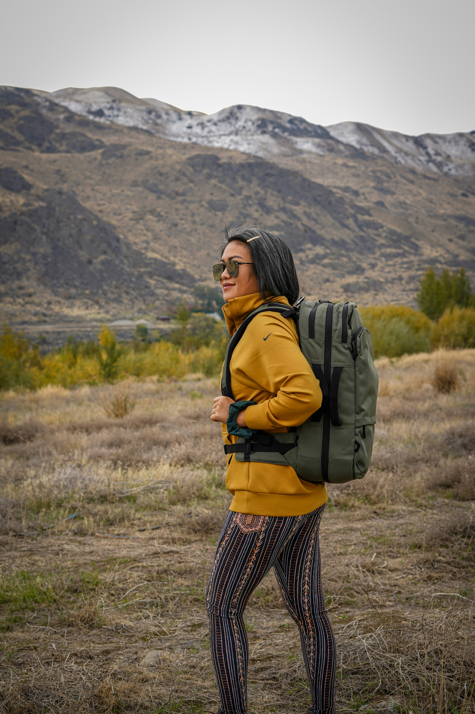

Travel, for me, has always been more than moving from one place to another. It’s about immersing myself in new cultures, listening to the stories of the people I meet, and paying attention to the small details that often go unnoticed—the smell of a local market, the sound of a hidden alley, the smile of a stranger. Every journey leaves behind moments that shape the way I see the world, and this space was created to gather those moments into one place. Here you’ll find a blend of photographs, videos, and reflections that capture not only the landscapes and sights but also the emotions and experiences behind them. Each image tells a story, and each video brings to life the movement, energy, and spirit of travel. My goal is not only to share where I’ve been but also to spark curiosity, inspire exploration, and highlight the beauty in both the grand adventures and the quiet pauses along the way. This is more than a travel log—it’s a collection of perspectives, memories, and insights that I hope will resonate with fellow travelers, dreamers, and anyone who believes that every journey has something unique to teach.
